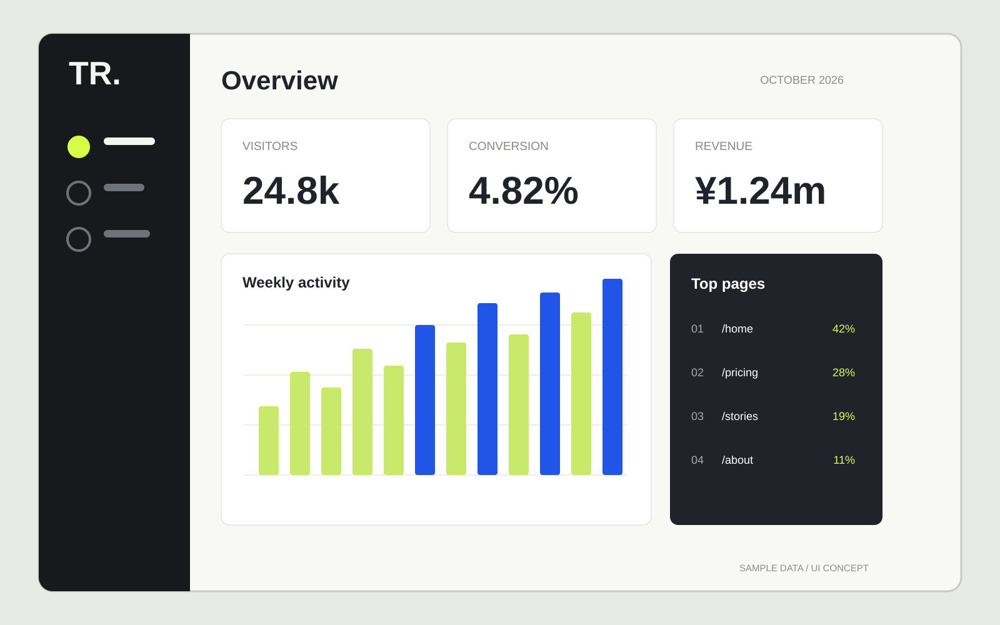

01
ASTRA
Digital archive / Design & front-end
Web designer / Front-end
Tokyo, Japan
PROFILE
SHEET / 2026
Profile
誰に・何を・どの順番で伝えるかを考え、Webサイトの情報設計、UIデザイン、HTML/CSS/JavaScriptによる実装まで一貫して取り組みます。
Capabilities
Working principles
Selected works
Full case studies on portfolio
Digital archive / Design & front-end
Florist / Art direction & UI

Dashboard / Product UI

Clinic / Information design